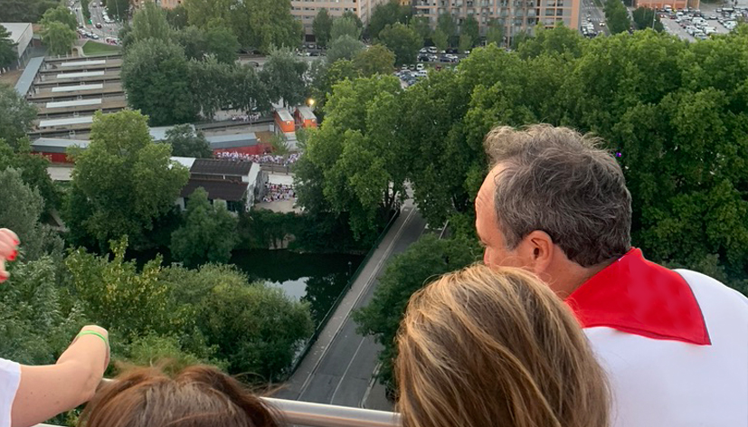

Hospitality corporativo en San Fermín
Cómo organizar experiencias exclusivas para empresas durante San Fermín.

San Fermín ofrece un entorno único para relaciones profesionales. Más allá del contexto festivo, la experiencia compartida en este tipo de eventos genera conexiones más sólidas y memorables.
Por qué San Fermín para empresa
Pocas experiencias combinan de esta forma tradición, intensidad y contexto social. Esto lo convierte en un entorno especialmente potente para hospitality.
Tipos de experiencias
Desde encuentros reducidos hasta programas completos, existen diferentes formatos adaptados a cada necesidad.
Puedes explorar estas opciones en la sección de experiencias corporativas.
Qué se puede organizar
Encierro, chupinazo, recorridos o experiencias personalizadas forman parte de las opciones disponibles dentro de las experiencias en San Fermín.
El valor de la experiencia compartida
Vivir San Fermín en grupo genera un contexto único para fortalecer relaciones profesionales.
Un enfoque discreto y cuidado
Este tipo de experiencias suelen gestionarse de forma personalizada y discreta, adaptándose a cada cliente.
También pueden complementarse con elementos exclusivos como los productos de To-Ko.